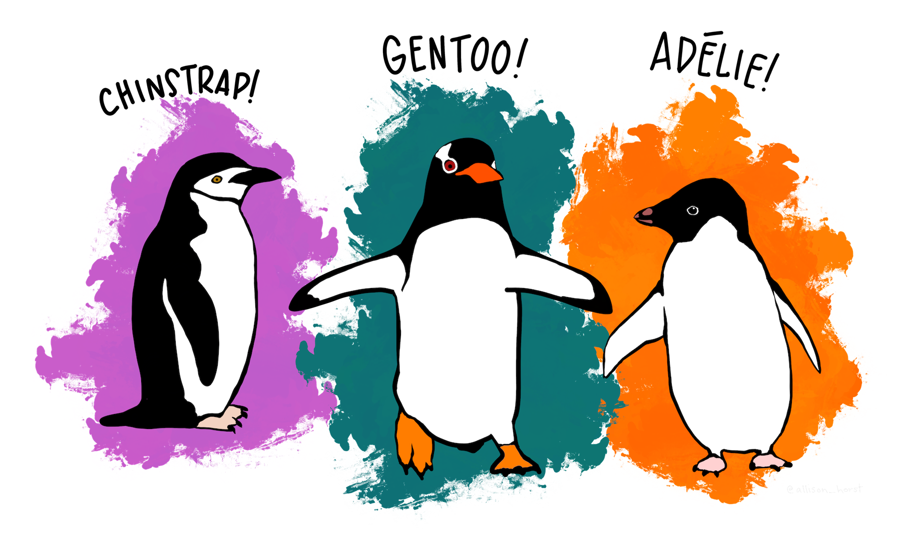

4: Classification
Session 4: Classification
Start
Goal: Start to discuss classification methods
Objective: Explore logistic regression and Naive Bayes classifiers
As we get started, try to install the palmerpenguins package in your Python software
Logistic Regression
Classification of \(y \in \{0,1\}\)
\[p(y|x,\theta) = \text{Ber}(y | \sigma(w^{T}x + b))\]
- logit \(a\): \(w^{T}x + b\)
- sigmoid:
\[\sigma(a) = \frac{1}{1 + e^{-a}} = p(y = 1 | x,\theta)\]
Palmer Penguins Example
R Code
adelie_color = "#fb7504"
chinstrap_color = "#c65ccc"
gentoo_color = "#067476"
penguin_class_df <- penguins |>
na.omit() |>
mutate(chinstrap_bool = ifelse(species == "Chinstrap", 1, 0)) |>
mutate(across(chinstrap_bool, as.factor)) #https://stackoverflow.com/questions/33180058/coerce-multiple-columns-to-factors-at-once
penguin_class_df |>
ggplot(aes(x = flipper_length_mm, y = bill_length_mm,
color = chinstrap_bool)) +
geom_point(size = 3) +
labs(title = "Classification Task",
subtitle = "Finding the <span style = 'color:#c65ccc'>Chinstrap</span> penguins among n = 333 penguins",
caption = "SML 301") +
scale_color_manual(values = c("gray70", chinstrap_color)) +
theme_minimal() +
theme(plot.title = element_markdown(face = "bold", size = 24),
plot.subtitle = element_markdown(size = 16))Generalized Linear Models
logistic_model <- stats::glm(chinstrap_bool ~ flipper_length_mm + bill_length_mm,
data = penguin_class_df,
family = binomial) #makes logistic regressionR code
# https://stats.stackexchange.com/questions/6206/how-to-plot-decision-boundary-in-r-for-logistic-regression-model
beta_0 <- coef(logistic_model)[1]
beta_1 <- coef(logistic_model)[2]
beta_2 <- coef(logistic_model)[3]
boundary_slope <- -1.0 * beta_1 / beta_2
boundary_intercept <- -1.0 * beta_0 / beta_2
penguin_pred_df <- penguin_class_df |>
mutate(species_pred = ifelse(
bill_length_mm > boundary_intercept + boundary_slope * flipper_length_mm,
1,0)) |>
mutate(across(species_pred, as.factor))
penguin_pred_df |>
ggplot(aes(x = flipper_length_mm, y = bill_length_mm,
color = species_pred)) +
geom_point(size = 3) +
geom_abline(intercept = boundary_intercept,
slope = boundary_slope,
color = adelie_color,
linewidth = 2,
linetype = 2) +
labs(title = "<span style = 'color:#fb7504'>Decision Boundary</span>",
subtitle = "where logit a = 0",
caption = "SML 301") +
scale_color_manual(values = c("gray70", chinstrap_color)) +
theme_minimal() +
theme(plot.title = element_markdown(face = "bold", size = 24),
plot.subtitle = element_markdown(size = 16))penguin_pred_df |>
janitor::tabyl(chinstrap_bool, species_pred) |>
janitor::adorn_totals(c("row", "col")) chinstrap_bool 0 1 Total
0 258 7 265
1 8 60 68
Total 266 67 333- accuracy: 0.9550
- sensitivity: 0.8824
- specificity: 0.9736
Activity: Literature Conclusions
We will look at the concluding paragraphs for some of the most influential papers in the history of machine learning:
Adaboost
- A Decision-Theoretic Generalization of on-Line Learning and an Application to Boosting (1997—published as abstract in 1995), Freund and Schapire
AlexNet
- ImageNet Classification with Deep Convolutional Neural Networks (2012)
DropOut
- Dropout: A Simple Way to Prevent Neural Networks from Overfitting (2014), Srivastava, Hinton, Krizhevsky, Sutskever, and Salakhutdinov
GANs
- General Adversarial Nets (2014), Goodfellow et al.
TensorFlow
- TensorFlow: A system for large-scale machine learning (2016), Abadi et al.
Word2Vec
- Efficient Estimation of Word Representations in Vector Space (2013), Mikolov, Chen, Corrado, and Dean
Naive Bayes
Data: Palmer Penguins
There exist multiple penguin species throughout Antarctica, including the Adelie, Chinstrap, and Gentoo. When encountering one of these penguins on an Antarctic trip, we might classify its species
\[Y = \begin{cases} A & \text{Adelie} \\ C & \text{Chinstrap} \\ G & \text{Gentoo} \end{cases}\]

Example comes from chapter 14 of Bayes Rules!

\(X_{1}\) categorical variable: whether the penguin weighs more than the average 4200 grams
\[X_{1} = \begin{cases} 1 & \text{above-average weight} \\ 0 & \text{below-average weight} \end{cases}\]
Numerical variables:
\[\begin{array}{rcl} X_{2} & = & \text{bill length (mm)} \\ X_{3} & = & \text{flipper length (mm)} \\ \end{array}\]
data(penguins_bayes)
penguins <- penguins_bayes
adelie_color = "#fb7504"
chinstrap_color = "#c65ccc"
gentoo_color = "#067476"
penguins |>
tabyl(species) species n percent
Adelie 152 0.4418605
Chinstrap 68 0.1976744
Gentoo 124 0.3604651Motivation
Here, we have three categories, whereas logistic regression is limited to classifying binary response variables. As an alternative, naive Bayes classification
- can classify categorical response variables \(Y\) with two or more categories
- doesn’t require much theory beyond Bayes’ Rule
- it’s computationally efficient, i.e., doesn’t require MCMC simulation
But why is it called “naive”?
One Categorical Predictor
Suppose an Antarctic researcher comes across a penguin that weighs less than 4200g with a 195mm-long flipper and 50mm-long bill. Our goal is to help this researcher identify the species of this penguin: Adelie, Chinstrap, or Gentoo
image code
penguins |>
drop_na(above_average_weight) |>
ggplot(aes(fill = above_average_weight, x = species)) +
geom_bar(position = "fill") +
labs(title = "<span style = 'color:#067476'>For which species is a<br>below-average weight most likely?</span>",
subtitle = "(focus on the <span style = 'color:#c65ccc'>below-average</span> category)",
caption = "SML 301") +
scale_fill_manual(values = c("#c65ccc", "#fb7504")) +
theme_minimal() +
theme(plot.title = element_markdown(face = "bold", size = 24),
plot.subtitle = element_markdown(size = 16))Recall: Bayes Rule
\[f(y|x_{1}) = \frac{\text{prior}\cdot\text{likelihood}}{\text{normalizing constant}} = \frac{f(y) \cdot L(y|x_{1})}{f(x_{1})}\] where, by the Law of Total Probability,
\[\begin{array}{rcl} f(x_{1} & = & \displaystyle\sum_{\text{all } y'} f(y')L(y'|x_{1}) \\ ~ & = & f(y' = A)L(y' = A|x_{1}) + f(y' = C)L(y' = C|x_{1}) + f(y' = G)L(y' = G|x_{1}) \\ \end{array}\]
over our three penguin species.
Calculation
penguins |>
select(species, above_average_weight) |>
na.omit() |>
tabyl(species, above_average_weight) |>
adorn_totals(c("row", "col")) species 0 1 Total
Adelie 126 25 151
Chinstrap 61 7 68
Gentoo 6 117 123
Total 193 149 342Prior probabilities:
\[f(y = A) = \frac{151}{342}, \quad f(y = C) = \frac{68}{342}, \quad f(y = G) = \frac{123}{342}\]
Likelihoods:
\[\begin{array}{rcccl} L(y = A | x_{1} = 0) & = & \frac{126}{151} & \approx & 0.8344 \\ L(y = C | x_{1} = 0) & = & \frac{61}{68} & \approx & 0.8971 \\ L(y = G | x_{1} = 0) & = & \frac{6}{123} & \approx & 0.0488 \\ \end{array}\]
Total probability:
\[f(x_{1} = 0) = \frac{151}{342}\cdot\frac{126}{151} + \frac{68}{342}\cdot\frac{61}{68} + \frac{123}{342}\cdot\frac{6}{123} = \frac{193}{342}\]
Bayes’ Rules:
\[\begin{array}{rcccccl} f(y = A | x_{1} = 0) & = & \frac{f(y = A) \cdot L(y = A | x_{1} = 0)}{f(x_{1} = 0)} = \frac{\frac{151}{342}\cdot\frac{126}{151}}{\frac{193}{342}} & \approx & 0.6528 \\ f(y = C | x_{1} = 0) & = & \frac{f(y = A) \cdot L(y = C | x_{1} = 0)}{f(x_{1} = 0)} = \frac{\frac{68}{342}\cdot\frac{61}{68}}{\frac{193}{342}} & \approx & 0.3161 \\ f(y = G | x_{1} = 0) & = & \frac{f(y = A) \cdot L(y = G | x_{1} = 0)}{f(x_{1} = 0)} = \frac{\frac{123}{342}\cdot\frac{6}{123}}{\frac{193}{342}} & \approx & 0.0311 \\ \end{array}\]
The posterior probability that this penguin is an Adelie is more than double that of the other two species
One Numerical Predictor
Let’s ignore the penguin’s weight for now and classify its species using only the fact that it has a 50mm-long bill
image code
penguins|>
ggplot(aes(x = bill_length_mm, fill = species)) +
geom_density(alpha = 0.7) +
geom_vline(xintercept = 50, linetype = "dashed", linewidth = 3) +
labs(title = "<span style = 'color:#c65ccc'>For which species is a<br>50mm-long bill the most common?</span>",
subtitle = "one numerical predictor",
caption = "SML 301") +
scale_fill_manual(values = c(adelie_color, chinstrap_color, gentoo_color)) +
theme_minimal() +
theme(plot.title = element_markdown(face = "bold", size = 24),
plot.subtitle = element_markdown(size = 16))Our data points to our penguin being a Chinstrap
- we must weigh this data against the fact that Chinstraps are the rarest of these three species
- difficult to compute likelihood \(L(y = A | x_{2} = 50)\)
This is where one “naive” part of naive Bayes classification comes into play. The naive Bayes method typically assumes that any quantitative predictor, here \(X_{2}\), is continuous and conditionally normal:
\[\begin{array}{rcl} X_{2} | (Y = A) & \sim & N(\mu_{A}, \sigma_{A}^{2}) \\ X_{2} | (Y = C) & \sim & N(\mu_{C}, \sigma_{C}^{2}) \\ X_{2} | (Y = G) & \sim & N(\mu_{G}, \sigma_{G}^{2}) \\ \end{array}\]
Prior Probability Distributions
# Calculate sample mean and sd for each Y group
penguins |>
group_by(species) |>
summarize(mean = mean(bill_length_mm, na.rm = TRUE),
sd = sd(bill_length_mm, na.rm = TRUE))# A tibble: 3 × 3
species mean sd
<fct> <dbl> <dbl>
1 Adelie 38.8 2.66
2 Chinstrap 48.8 3.34
3 Gentoo 47.5 3.08penguins |>
ggplot(aes(x = bill_length_mm, color = species)) +
stat_function(fun = dnorm, args = list(mean = 38.8, sd = 2.66),
aes(color = "Adelie"), linewidth = 3) +
stat_function(fun = dnorm, args = list(mean = 48.8, sd = 3.34),
aes(color = "Chinstrap"), linewidth = 3) +
stat_function(fun = dnorm, args = list(mean = 47.5, sd = 3.08),
aes(color = "Gentoo"), linewidth = 3) +
...image code
penguins |>
ggplot(aes(x = bill_length_mm, color = species)) +
stat_function(fun = dnorm, args = list(mean = 38.8, sd = 2.66),
aes(color = "Adelie"), linewidth = 3) +
stat_function(fun = dnorm, args = list(mean = 48.8, sd = 3.34),
aes(color = "Chinstrap"), linewidth = 3) +
stat_function(fun = dnorm, args = list(mean = 47.5, sd = 3.08),
aes(color = "Gentoo"), linewidth = 3) +
geom_vline(xintercept = 50, linetype = "dashed") +
labs(title = "<span style = 'color:#c65ccc'>Prior Probabilities</span>",
subtitle = "conditionally normal",
caption = "SML 301") +
scale_color_manual(values = c(adelie_color, chinstrap_color, gentoo_color)) +
theme_minimal() +
theme(plot.title = element_markdown(face = "bold", size = 24),
plot.subtitle = element_markdown(size = 16))Computing the likelihoods in R:
# L(y = A | x_2 = 50) = 2.12e-05
dnorm(50, mean = 38.8, sd = 2.66)
# L(y = C | x_2 = 50) = 0.112
dnorm(50, mean = 48.8, sd = 3.34)
# L(y = G | x_2 = 50) = 0.09317
dnorm(50, mean = 47.5, sd = 3.08)Total probability:
\[f(x_{2} = 50) = \frac{151}{342} \cdot 0.0000212 + \frac{68}{342} \cdot 0.112 + \frac{123}{342} \cdot 0.09317 \approx 0.05579\]
Bayes’ Rules:
\[\begin{array}{rcccccl} f(y = A | x_{2} = 50) & = & \frac{f(y = A) \cdot L(y = A | x_{1} = 0)}{f(x_{1} = 0)} = \frac{\frac{151}{342} \cdot 0.0000212}{0.05579} & \approx & 0.0002 \\ f(y = C | x_{2} = 50) & = & \frac{f(y = A) \cdot L(y = C | x_{1} = 0)}{f(x_{1} = 0)} = \frac{\frac{68}{342} \cdot 0.112}{0.05579} & \approx & 0.3992 \\ f(y = G | x_{2} = 50) & = & \frac{f(y = A) \cdot L(y = G | x_{1} = 0)}{f(x_{1} = 0)} = \frac{\frac{123}{342} \cdot 0.09317}{0.05579} & \approx & 0.6006 \\ \end{array}\]
Though a 50mm-long bill is relatively less common among Gentoo than among Chinstrap, it follows that our naive Bayes classification, based on our prior information and penguin’s bill length alone, is that this penguin is a Gentoo – it has the highest posterior probability.
We’ve now made two naive Bayes classifications of our penguin’s species, one based solely on the fact that our penguin has below-average weight and the other based solely on its 50mm-long bill (in addition to our prior information). And these classifications disagree: we classified the penguin as Adelie in the former analysis and Gentoo in the latter. This discrepancy indicates that there’s room for improvement in our naive Bayes classification method.
Two Predictor Variables
image code
penguins |>
ggplot(aes(x = flipper_length_mm, y = bill_length_mm,
color = species)) +
geom_point(size = 3) +
geom_segment(aes(x = 195, y = 30, xend = 195, yend = 50),
color = "black", linetype = 2, linewidth = 2) +
geom_segment(aes(x = 170, y = 50, xend = 195, yend = 50),
color = "black", linetype = 2, linewidth = 2) +
labs(title = "<span style = 'color:#c65ccc'>Two Predictor Variables</span>",
subtitle = "50mm-long bill and 195mm-long flipper",
caption = "SML 301") +
scale_color_manual(values = c(adelie_color, chinstrap_color, gentoo_color)) +
theme_minimal() +
theme(plot.title = element_markdown(face = "bold", size = 24),
plot.subtitle = element_markdown(size = 16))Generalizing Bayes’ Rule:
\[f(y | x_{2}, x_{3}) = \frac{f(y) \cdot L(y | x_{2}, x_{3})}{\sum_{y'} f(y') \cdot L(y' | x_{2}, x_{3})}\]
Another “naive” assumption of conditionally independent:
\[L(y | x_{2}, x_{3}) = f(x_{2}, x_{3} | y) = f(x_{2} | y) \cdot f(x_{3} | y)\]
- mathematically efficient
- but what about correlation?
# sample statistics of x_3: flipper length
penguins |>
group_by(species) |>
summarize(mean = mean(flipper_length_mm, na.rm = TRUE),
sd = sd(flipper_length_mm, na.rm = TRUE))# A tibble: 3 × 3
species mean sd
<fct> <dbl> <dbl>
1 Adelie 190. 6.54
2 Chinstrap 196. 7.13
3 Gentoo 217. 6.48Likelihoods of a flipper length of 195 mm:
# L(y = A | x_3 = 195) = 0.04554
dnorm(195, mean = 190, sd = 6.54)
# L(y = C | x_3 = 195) = 0.05541
dnorm(195, mean = 196, sd = 7.13)
# L(y = G | x_3 = 195) = 0.0001934
dnorm(195, mean = 217, sd = 6.48)Total probability:
\[f(x_{2} = 50, x_{3} = 195) = \frac{151}{342} \cdot 0.0000212 \cdot 0.04554 + \frac{68}{342} \cdot 0.112 \cdot 0.05541 + \frac{123}{342} \cdot 0.09317 \cdot 0.0001931 \approx 0.001241\]
Bayes’ Rules:
\[\begin{array}{rcccl} f(y = A | x_{2} = 50, x_{3} = 195) & = & \frac{\frac{151}{342} \cdot 0.0000212 \cdot 0.04554}{0.0001931} & \approx & 0.0003 \\ f(y = C | x_{2} = 50, x_{3} = 195) & = & \frac{\frac{68}{342} \cdot 0.112 \cdot 0.05541}{0.0001931} & \approx & 0.9944 \\ f(y = G | x_{2} = 50, x_{3} = 195) & = & \frac{\frac{123}{342} \cdot 0.09317 \cdot 0.0001931}{0.0001931} & \approx & 0.0052 \\ \end{array}\]
In conclusion, our penguin is almost certainly a Chinstrap.
Bayes and Logistic Regression
The class posterior distribution for a Naive Bayes classification model has the same form as multinomial logistic regression:
\[p(y = c|\vec{x}, \vec{\theta}) = \displaystyle\frac{e^{\beta_{c}^{T}\vec{x} + \gamma_{c}}}{\displaystyle\sum_{c'=1}^{C} e^{\beta_{c}^{T}\vec{x} + \gamma_{c}}}\]
Naive Bayes
\[f(y | x_{1}, x_{2}, ..., x_{p}) = \frac{f(y) \cdot L(y | x_{1}, x_{2}, ..., x_{p})}{\sum_{y'} f(y') \cdot L(y' | x_{1}, x_{2}, ..., x_{p})}\]
- conditionally independent \(\rightarrow\) computationally efficient
- generalizes to more than two categories
- assumptions violated commonly in practice
- optimizes joint likelihood \(\displaystyle\prod_{n} p(y_{n},\vec{x}_{n}|\vec{\theta})\)
Logistic Regression
\[\log\left(\frac{\pi}{1-\pi}\right) = \beta_{0} + \beta_{1}X_{1} + \cdots + \beta_{k}X_{p}\]
- binary classification
- coefficients \(\rightarrow\) illumination of the relationships among these variables
- optimizes conditional likelihood \(\displaystyle\prod_{n} p(y_{n}|\vec{x}_{n},\vec{\theta})\)
Discriminative vs Generative
Advantages of discriminative classifiers
- Better predictive accuracy
- Can handle feature preprocessing
- Well-calibrated probabilities
Advantages of generative classifiers
- Easy to fit
- Can easily handle missing input features
- Can fit classes separately
- Can handle unlabeled training data
- May be more robust to spurious features
| Types of Classification Techniques1 | |
|---|---|
| Discriminative Classifiers | Generative Classifiers |
| Logistic regression | Naive Bayes |
| Support vector machines | Bayesian networks |
| Neural networks | Markov random fields |
| Nearest neighbor | Hidden Markov Models |
| Conditional Random Fields | Latent Dirichlet Allocation |
| Random Forests | Generative Adversarial Networks |
| 1 Source: https://www.analyticsvidhya.com/blog/2021/07/deep-understanding-of-discriminative-and-generative-models-in-machine-learning/ | |
Quo Vadimus?
due this Friday (5 PM):
- Precept 2
- Advice: You will be asked to pick teammates for project groups next week, so take some time to talk with your classmates
Footnotes
(optional) Additional Resources
Logistic Regression in Python by Susan Li
Naive Bayes in Python by Shuvrajyoti Debroy
Naive Bayes (from scratch) by Jason Brownlee
Session Info
sessionInfo()R version 4.4.2 (2024-10-31 ucrt)
Platform: x86_64-w64-mingw32/x64
Running under: Windows 10 x64 (build 19045)
Matrix products: default
locale:
[1] LC_COLLATE=English_United States.utf8
[2] LC_CTYPE=English_United States.utf8
[3] LC_MONETARY=English_United States.utf8
[4] LC_NUMERIC=C
[5] LC_TIME=English_United States.utf8
time zone: America/New_York
tzcode source: internal
attached base packages:
[1] stats graphics grDevices utils datasets methods base
other attached packages:
[1] palmerpenguins_0.1.1 tidyr_1.3.1 janitor_2.2.0
[4] gt_0.11.1 ggtext_0.1.2 ggplot2_3.5.1
[7] dplyr_1.1.4 bayesrules_0.0.2
loaded via a namespace (and not attached):
[1] gridExtra_2.3 inline_0.3.19 rlang_1.1.5
[4] magrittr_2.0.3 snakecase_0.11.1 matrixStats_1.4.1
[7] e1071_1.7-16 compiler_4.4.2 loo_2.8.0
[10] vctrs_0.6.5 reshape2_1.4.4 stringr_1.5.1
[13] pkgconfig_2.0.3 fastmap_1.2.0 backports_1.5.0
[16] labeling_0.4.3 utf8_1.2.4 threejs_0.3.3
[19] promises_1.3.0 rmarkdown_2.29 markdown_1.13
[22] nloptr_2.1.1 purrr_1.0.2 xfun_0.50
[25] jsonlite_1.8.9 later_1.3.2 parallel_4.4.2
[28] R6_2.5.1 dygraphs_1.1.1.6 stringi_1.8.4
[31] StanHeaders_2.32.10 boot_1.3-31 lubridate_1.9.3
[34] Rcpp_1.0.12 rstan_2.32.6 knitr_1.49
[37] zoo_1.8-12 base64enc_0.1-3 bayesplot_1.11.1
[40] httpuv_1.6.15 Matrix_1.7-1 splines_4.4.2
[43] igraph_2.1.4 timechange_0.3.0 tidyselect_1.2.1
[46] rstudioapi_0.17.1 abind_1.4-8 yaml_2.3.10
[49] codetools_0.2-20 miniUI_0.1.1.1 curl_5.2.3
[52] pkgbuild_1.4.6 lattice_0.22-6 tibble_3.2.1
[55] plyr_1.8.9 shiny_1.9.1 withr_3.0.2
[58] groupdata2_2.0.3 posterior_1.6.0 evaluate_1.0.3
[61] survival_3.7-0 proxy_0.4-27 RcppParallel_5.1.9
[64] xts_0.14.0 xml2_1.3.6 pillar_1.10.1
[67] tensorA_0.36.2.1 checkmate_2.3.2 DT_0.33
[70] stats4_4.4.2 shinyjs_2.1.0 distributional_0.5.0
[73] generics_0.1.3 commonmark_1.9.2 rstantools_2.4.0
[76] munsell_0.5.1 scales_1.3.0 minqa_1.2.8
[79] gtools_3.9.5 xtable_1.8-4 class_7.3-22
[82] glue_1.8.0 tools_4.4.2 shinystan_2.6.0
[85] lme4_1.1-35.5 colourpicker_1.3.0 grid_4.4.2
[88] QuickJSR_1.4.0 crosstalk_1.2.1 colorspace_2.1-1
[91] nlme_3.1-166 cli_3.6.3 V8_6.0.0
[94] gtable_0.3.6 sass_0.4.9 digest_0.6.37
[97] farver_2.1.2 htmlwidgets_1.6.4 htmltools_0.5.8.1
[100] lifecycle_1.0.4 mime_0.12 rstanarm_2.32.1
[103] gridtext_0.1.5 shinythemes_1.2.0 MASS_7.3-61